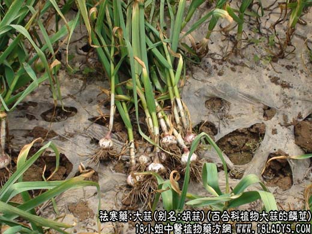
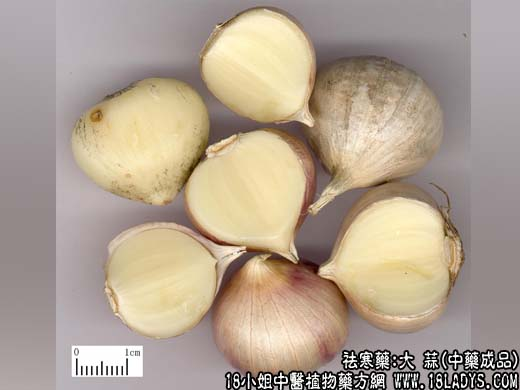
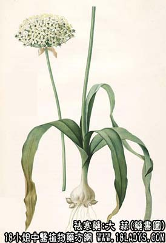

大蒜为少常用中药。载自《本草经集注》。《本草纲目》列入菜部。
别名：胡蒜、葫、独蒜、独头蒜。
来源：为百合科植物大蒜的鳞茎，均为栽培。
产地：全国各地均有栽培。
性状鉴别：鳞茎呈扁球或短圆锥形，外有灰白色或淡棕色膜质鳞被；剥去鳞叶，内有6~10个蒜瓣，轮生花茎的周围；茎基部盘状，生有多数须根。每一蒜瓣外包膜质，剥去膜质，即见白色、肥厚多汁的鳞片。有浓烈的蒜臭，味辛辣。
主要成分：新鳞茎每100g含水分70g，蛋白质4.4g，脂肪0.2g，碳水化合物23g，粗纤维0.7g，另含钙、磷、硫胺素、核黄素、挥发油等。
功效与作用：1、抗菌作用；挥发油所含的蒜素，对于数种细菌性、真菌性与原虫性感染，已充分证明有杀菌作用，并已广泛应用于临床。
大蒜的发挥性物质，大蒜汁及浸出液及蒜素在试管内对多种致病菌，如葡萄、脑膜炎、肺炎、链球菌及白喉、痢疾、大肠、伤寒、副伤害、结合杆菌等均有明显的抑菌和杀菌作用。
2、对心血管系统的作用：大蒜的新加仑制剂，毒性很小，能减慢心率，增加心收缩力，扩张末梢血管，增加利尿，能降低实验性动脉粥硬化兔的血压。临床上治疗高血压及动脉粥样硬化有效。
炮制：生用，捣汁。
性味：辛、温。
归经：入脾、胃、肺经。
功能：行滞气，暖脾胃，消症积，解毒杀虫。
主治：饮食积滞、脘腹冷痛、水肿胀满，痢疾，疟疾，百日咳，蛇虫咬伤。
临床应用：大蒜，其气熏烈，能通五脏，达诸窍，去寒湿，消痈肿，化症积肉食，解毒杀虫，其功不小。但辛能散气，热能助火，伤肺损目，故阴虚火旺者及目疾、舌、喉诸患者忌服。
使用注意：阴虚火旺、口舌生疮者忌用。
用量：内服：煎汤，4~9g，生食、煨食、或作丸服。外用：捣敷、或作栓剂、切片炙。
处方举例：1、治心腹冷痛：（《濒湖集简方》）蒜、醋浸二、三月，食至数颗。
2、治肺结核：（辽宁《中草药新医疗法资料选编》）鲜大蒜，第一次1~2头，捣碎后，以深呼吸，吸其挥发之气，每日二次，每次1~3小时。